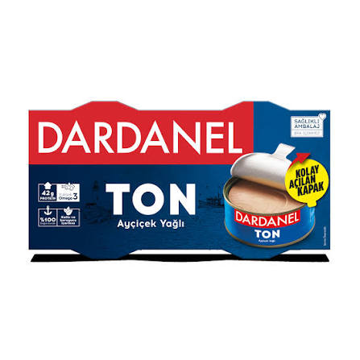
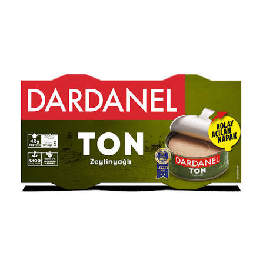
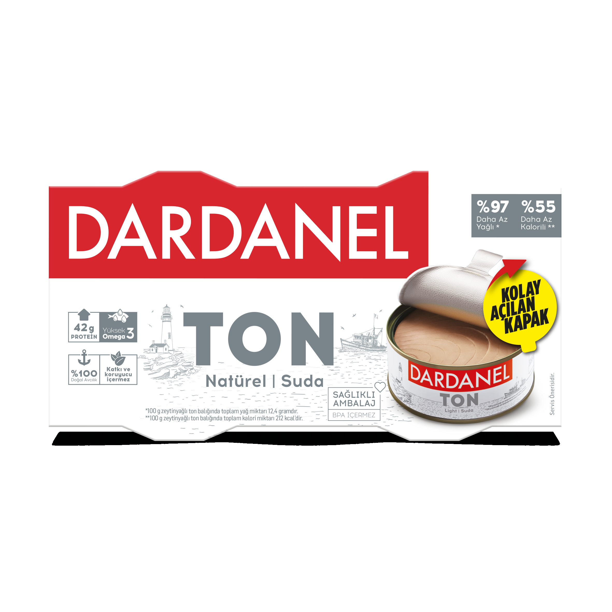
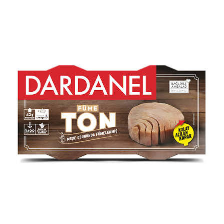
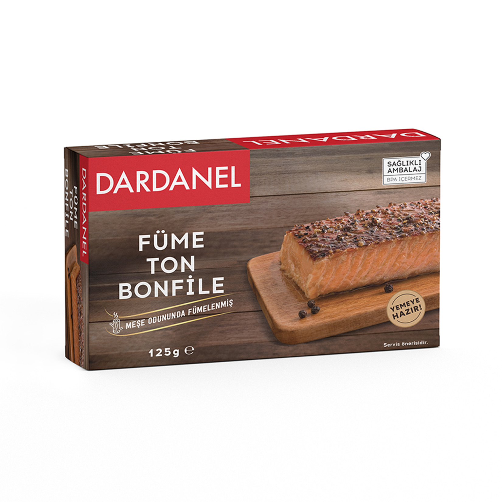
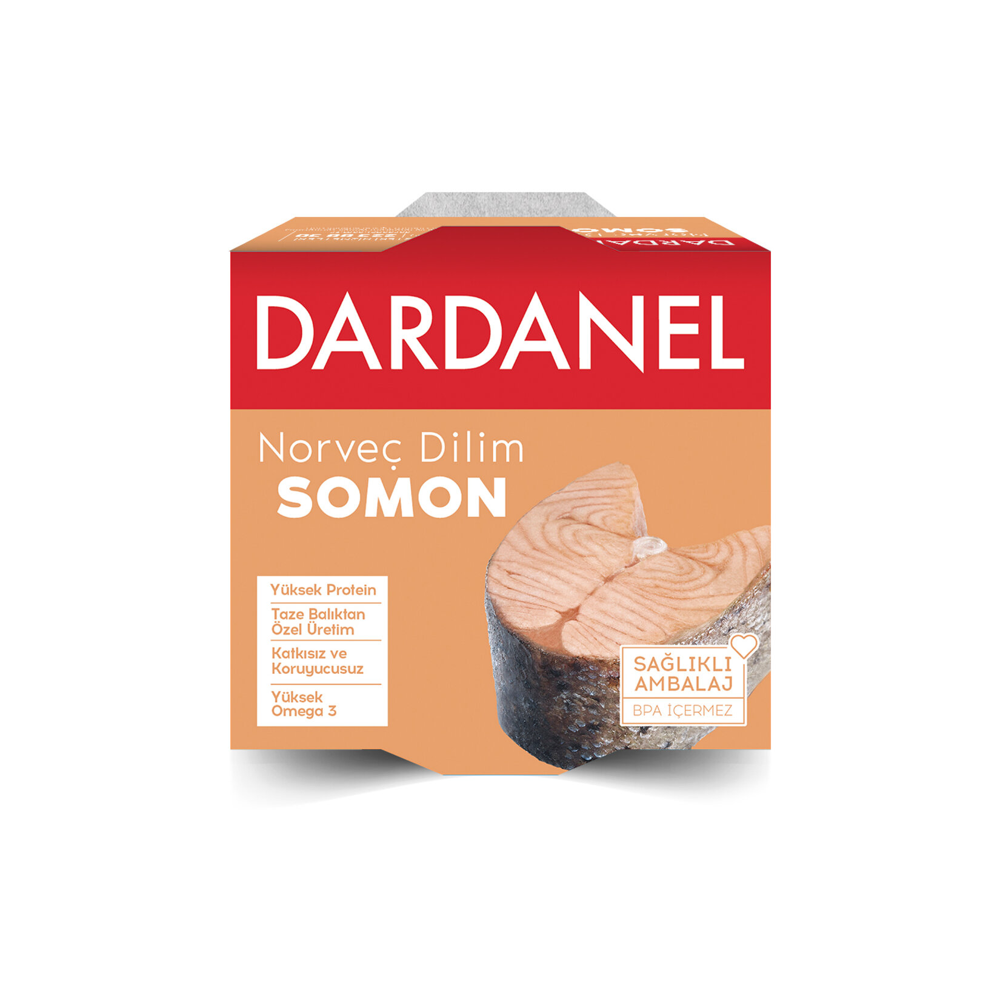
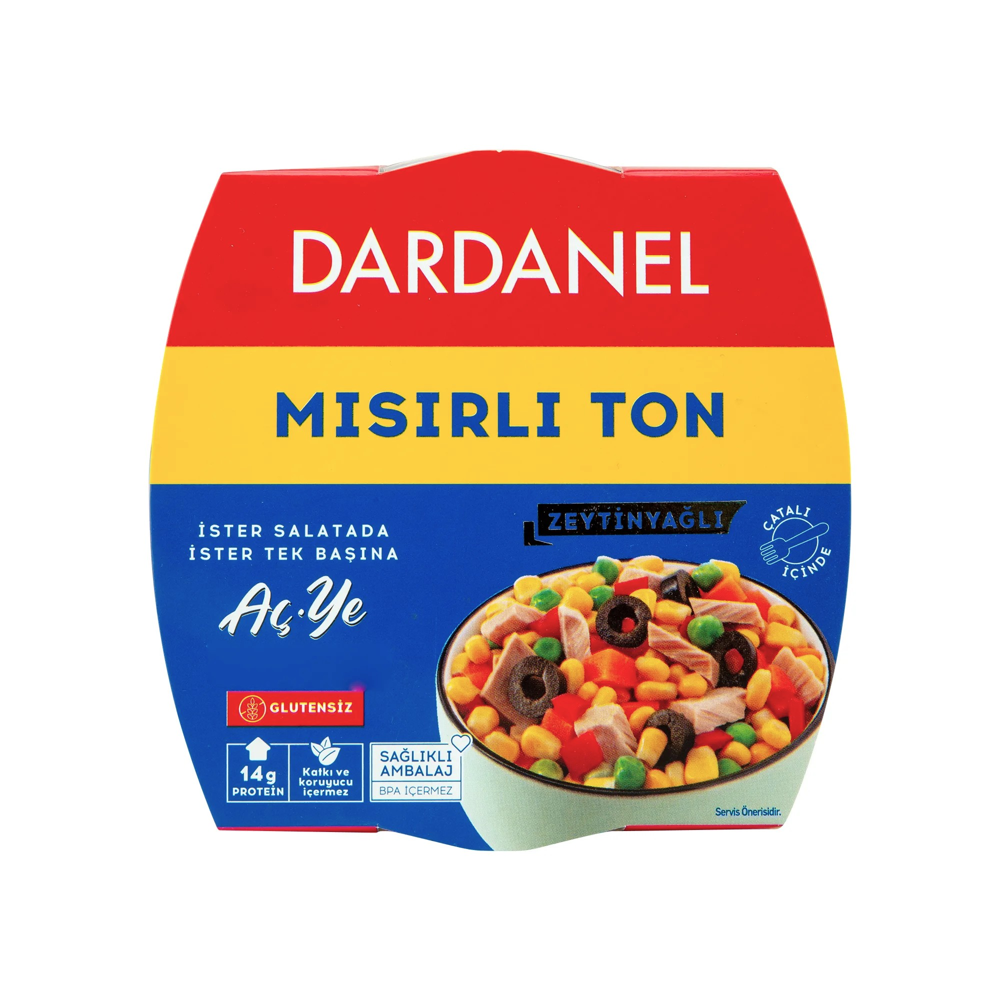

En çok tercih edilen klasik Dardanel lezzeti.

Doğal zeytinyağı ile hazırlanmış özel tat.

Yağ ilavesiz hafif ve pratik seçenek.

Kendine özgü aromasıyla farklı bir deneyim.

Özel seçilmiş ton balığı parçalarından üretilir.

Omega-3 bakımından zengin sağlıklı seçenekler.

Zeytinyağlı ton balığı, mısır ve sebzelerle hazırlanmış pratik lezzet.
Ürün Çeşidi
İhracat Ülkesi
Yıllık Tecrübe